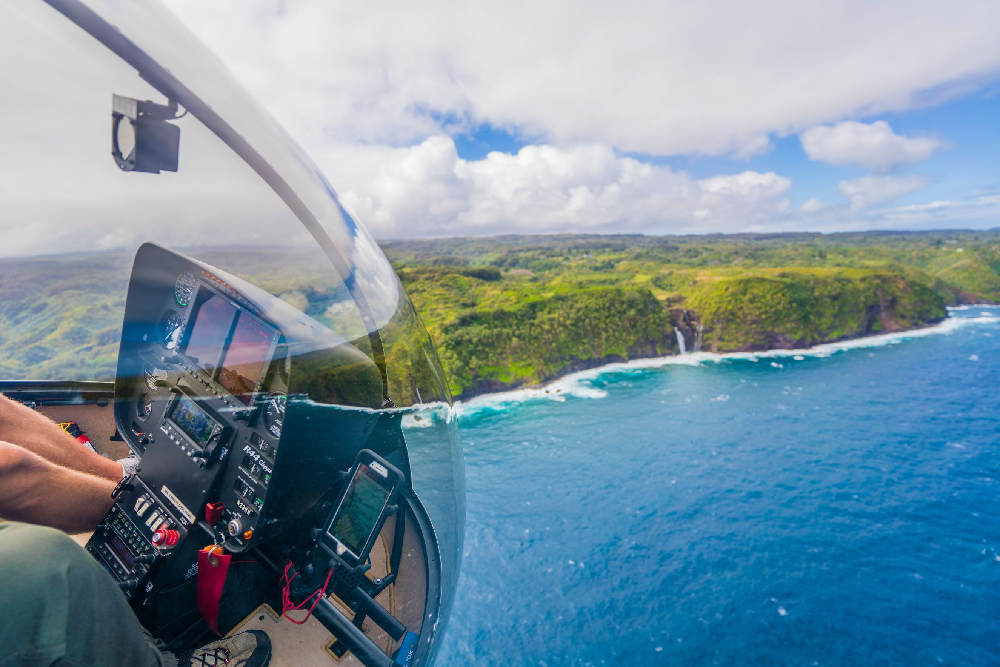
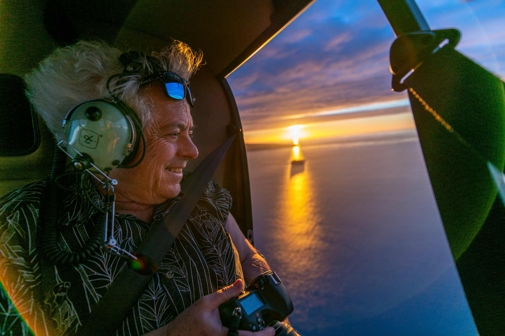
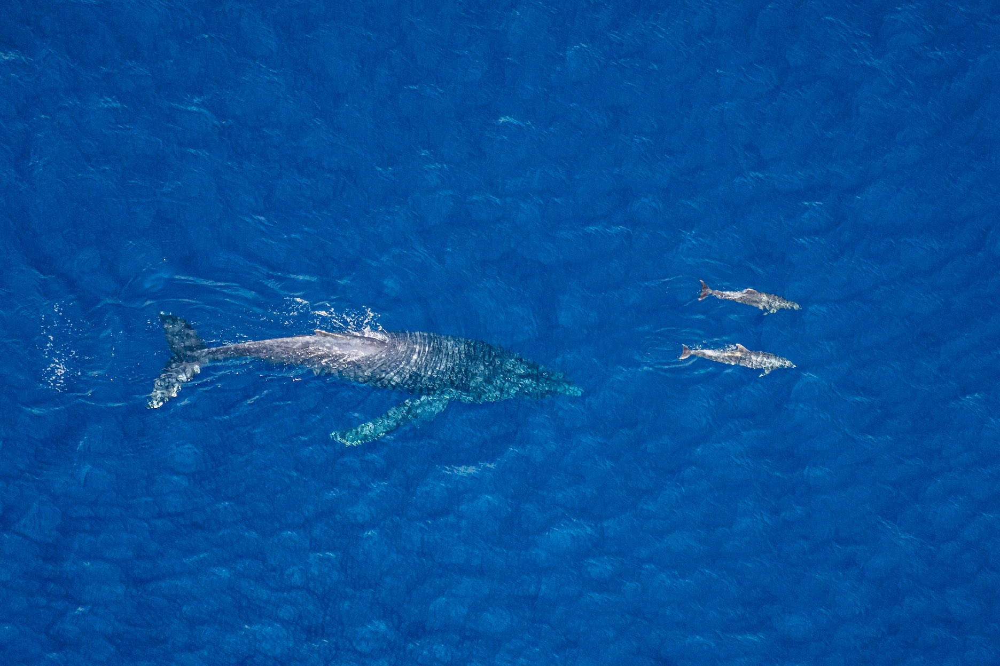

Maui Helicopter Tours: A Photographer’s View
Helicopter tours are fun, but can be expensive. And this is why we always suggest prioritizing or budgeting the important activities first.
What changes when you see the island’s valleys, waterfalls and sea cliffs from the air.

Invest in the Moments That Last
For less than the cost of a Luau or Helicopter tour, we always suggest doing a family photoshoot on Maui with Wailea Photo™. It is the only gift to yourself and your family that will keep on giving forever, generation after generation…
Now with that being said: Maui, with its stunning landscapes and breathtaking natural beauty, is a dream destination for adventure seekers. One of the best ways to truly appreciate the island's wonders is through a helicopter tour. Hovering above cascading waterfalls, verdant valleys, and pristine beaches, you'll experience Maui from a whole new perspective. In this blog post, we'll rank the top helicopter tours in Maui, based on their scenic routes, knowledgeable guides, safety measures, and overall customer experience. Buckle up and get ready for an unforgettable journey through the skies!

Blue Hawaiian & Maverick Helicopters
A. Blue Hawaiian Helicopters
Blue Hawaiian Helicopters has established itself as a leader in helicopter tours in Maui. With a fleet of state-of-the-art helicopters equipped with panoramic windows, they offer unparalleled views of the island's most iconic sights. Their experienced pilots are not only skilled aviators but also excellent narrators, providing insightful commentary throughout the tour. Safety is their top priority, and their impeccable record speaks volumes about their commitment to passenger well-being.
B. Maverick Helicopters
Maverick Helicopters is known for their luxurious and comfortable helicopter tours in Maui. Their ECO-Star helicopters provide a spacious and quiet flying experience, allowing you to immerse yourself in the beauty of the island without distractions. Their knowledgeable pilots share captivating stories and interesting facts about Maui's history, geology, and culture. With exceptional customer service and attention to detail, Maverick Helicopters ensures an unforgettable journey tailored to your preferences.
Air Maui Helicopter Tours
C. Air Maui Helicopter Tours: (OUR PICK!)
Air Maui Helicopter Tours is renowned for its intimate and personalized experiences. Flying in their A-Star helicopters, you'll have the opportunity to explore Maui's hidden gems and less-traveled areas. Their pilots are passionate about showcasing the island's natural wonders and take pride in creating memorable moments for their passengers. From the cascading waterfalls of Hana to the towering peaks of Haleakala, Air Maui Helicopter Tours offers a diverse range of scenic routes to suit every adventurer. Visit Air Maui →

4. Try flying a plane with Maui Flight Academy!
No experience necessary. You will fly in the absolute comfort and safety of the plane with the parachute, the Cirrus SR22 along side the Owner and Chief Flight Instructor for Maui Flight Academy, Laurence Balter.
Whether you want a thrilling aviation adventure or a hands-on introduction to piloting, flying over Maui's coastlines from the cockpit of a Cirrus is an experience unlike any other.
Soar Above Paradise
Embarking on a helicopter tour in Maui is an extraordinary experience that allows you to witness the island's unparalleled beauty from a vantage point few get to enjoy. Whether you choose Blue Hawaiian Helicopters, Maverick Helicopters, or Air Maui Helicopter Tours, you're guaranteed a thrilling and awe-inspiring adventure. So, buckle up, take to the skies, and prepare to be amazed as Maui reveals its hidden treasures from above. Your Maui helicopter tour will undoubtedly be a highlight of your Hawaiian vacation!